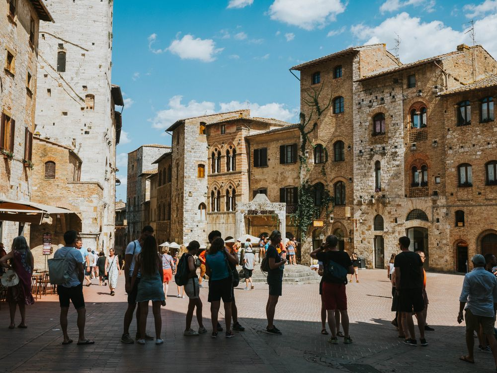

LISTENING
8. Look at the picture and answer the questions.

Where are these people, and who is the woman with the umbrella?
What is happening? What is the guide explaining to the group?
What information do you think you will hear in the recording?
9. Listen and complete the sentences with ONE word or a number.
Scan to listen on your phone
The walking tour lasts
hours.
The tour has
stops in total.
The first stop is the Ark
, the oldest building in the city.
To stay with the group, tourists should look for Malika's yellow
.
The group will spend about
minutes at the first stop.
10. Listen again and put the events of the tour in the correct order (1–5).
The group explores the old trading domes.
Malika welcomes the group and checks everyone can hear her.
The tour finishes at a tea house near the pond.
The group visits the Ark Fortress.
The group walks to the Kalon Minaret.
← Previous
Contents
Next →
73